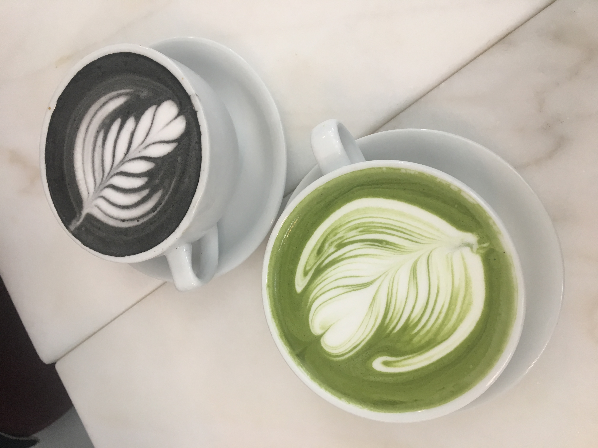
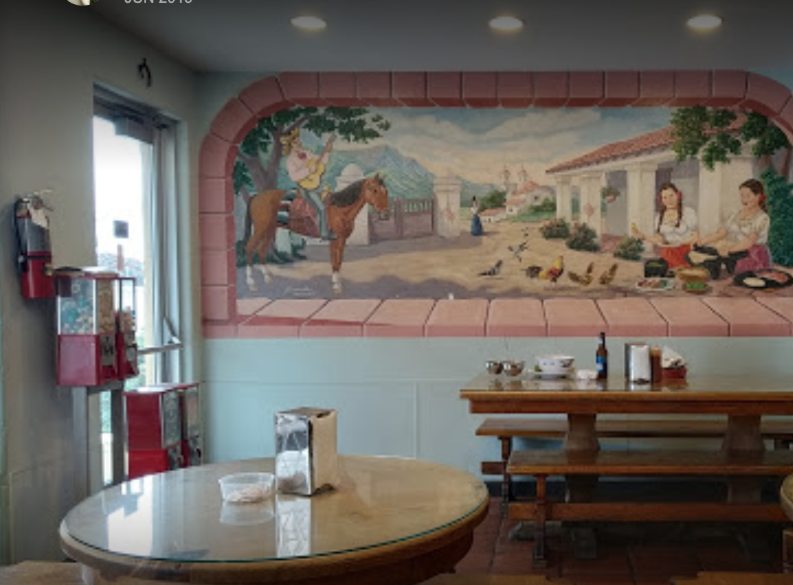
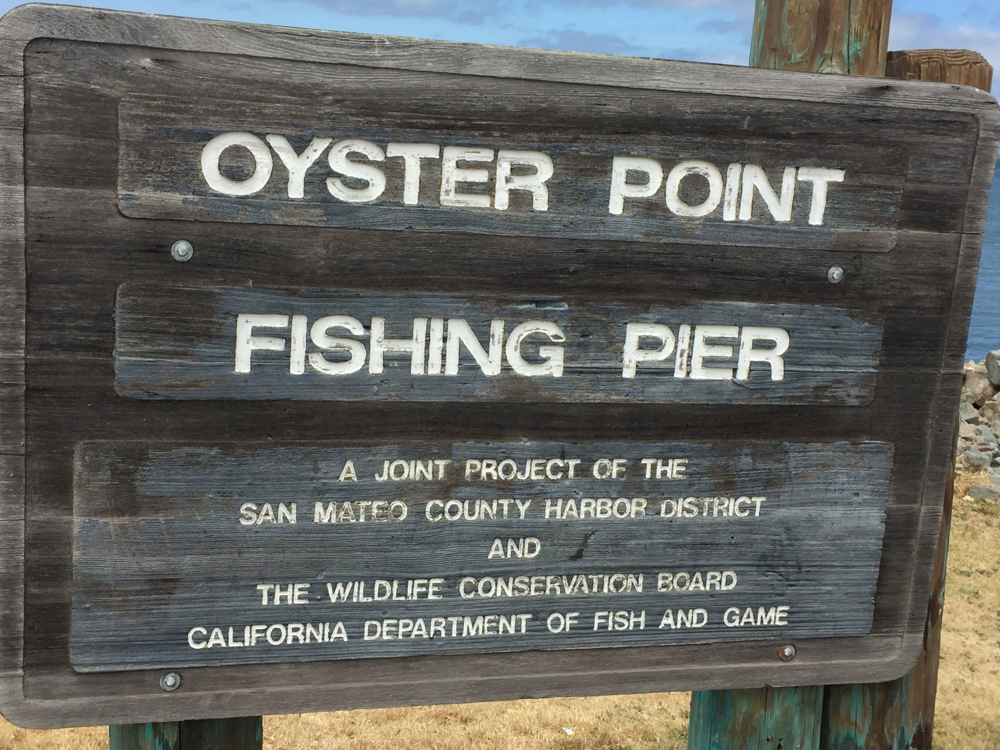

South San Francisco
A relatively small city located north of San Bruno and to the south of Colma and Daly City. It is nicknamed South City to locals, much like San Francisco is charmingly called The City. There are a handful of condensed neighborhoods that weave into each other but each one has its own perks and attractions that anyone can enjoy. I have fond memories of the the places that I chose within these specific neighborhoods--they are Downtown, Oyster Point, and Sign Hill. If you're ever around the area, keep on reading to stop by these cool spots!
Downtown
Spruce Cafe
Tucked away at a slight intersection on El Camino Real is this small, contemporary cafe nestled by the
corner of a residential street, Spruce. They sell a variety of sweet and savory pastries and, of course, lattes of many flavors.
I had always wanted to spend time outside of my room drawing people in a cafe but have
felt too self conscious to do so alone. When I came here with my friends, I felt more comfortable all while enjoying
some warm pastries.
If you're interested in checking out their menu before you get there, click here!
Bunn Mi Cafe
This Vietnamese cafe/restaurant is along Grand Avenue, which is a street known to host many restuarants and family-owned stores
in such a small area. It's close to a street corner so it isn't easy to miss and the smell of fresh, savory dishes
will draw you in! The large chalkboard menu that greets you at the door is very appealing and adds a rustic touch in relation to
its small size.
Taqueria La Morena
As you could probably guess by the name, La Morena offers Mexican comfort food that is cheap and delicious.
The service is pretty fast and efficient but even though it gets loud, the cozy and casual atmosphere can distract you
from the bustle of people walking in. This place was always a go-to for my parents and I when I was younger and we'd
go on picnics by Oyster Point Marina while we enjoy our food and the crashing of the ocean waves.

Sign Hill
Sign Hill Cafe
The park is known for its hillside letters that spell out
"South San Francisco
The Industrial City"
With many hiking trails that loop around with a view of Colma, Daly City, the San Bruno Mountains, and the airport,
it is breathtaking to visit. The winding paths are more elevated on some trails than others but provides some challenge
to those who are up for it.


Oyster Point
Oyster Point Marina
Oyster Point Marina gets its name from the neighborhood it's in,
which is--drum roll--Oyster Point! Rows of boats line the port and there's also
a small trail that's accessible to the public. Buildings
